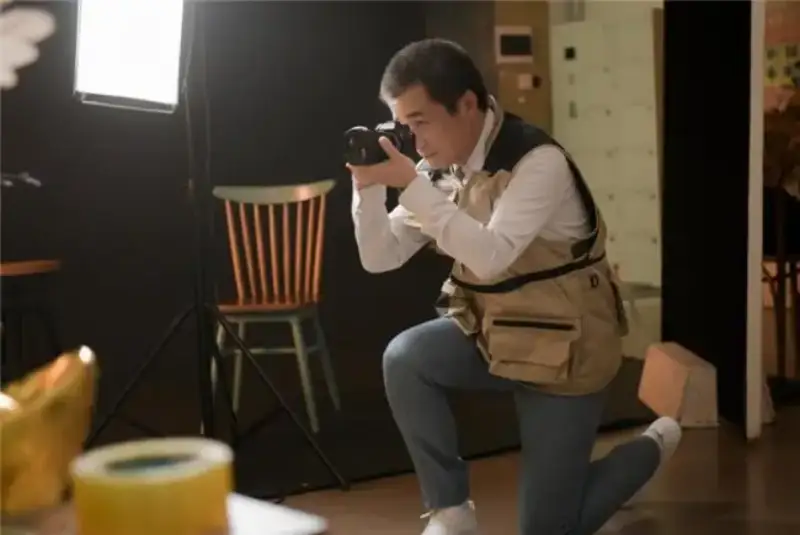
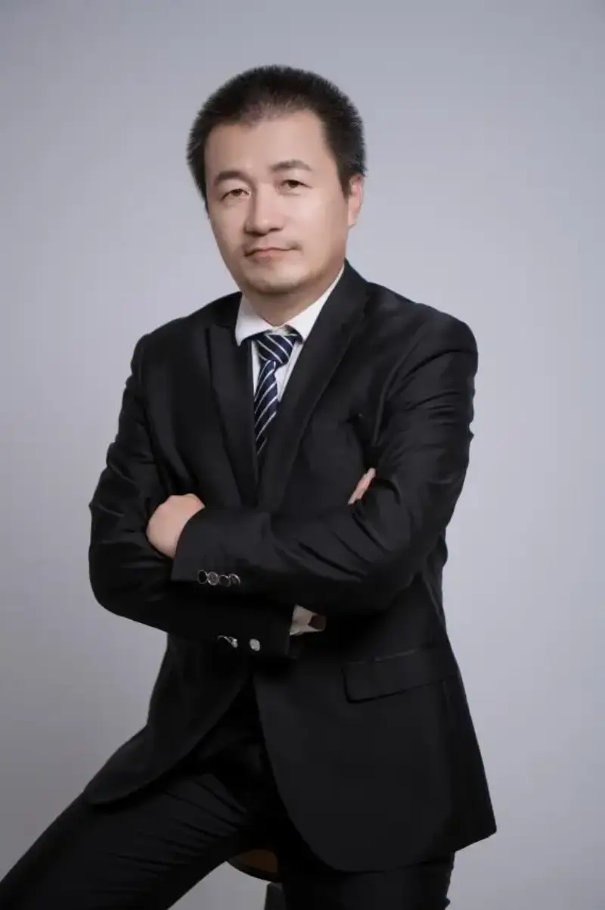

He is an innovator full of passion for photography. With a deep understanding of the art and a steady drive to improve equipment, he has produced a series of innovations. These range from the invention patent for a new smart terminal and its connecting case and the utility patent for a photo grip, phone, and camera device, to the software upgrades of a smart-algorithm motion capture system V1.0 and a cloud image management platform V1.0. Each result widens what camera gear can do, makes it easier to use, and brings new energy to the field. He is the photographer Luo Tiancheng.
Luo Tiancheng took a strong interest in photography as a child. He loves photography, and he loves catching the good moments of life through a lens. But as the craft developed, he found that existing gear could no longer meet his pursuit of the perfect photo. With more than ten years of professional knowledge in installing and maintaining instruments, he decided to take up the research and design of camera gear himself. After years of quiet study and exploration, his effort finally paid off.
In 2013 he completed the invention patent for a new smart terminal and its connecting case. It brought more advanced and easier gear to photography. The smart terminal can be a phone or a tablet, and the case is a carefully designed camera device. The case holds an interchangeable-lens mount, and a sensor sits behind the mount. When a lens is attached, the light through the lens forms an image on the sensor. This raises image quality and gives a smart terminal a professional level of shooting. The case also connects to the terminal easily. The user simply docks the case, and the gear mounts or detaches fast. This makes camera gear efficient and flexible, lets enthusiasts start with ease, and helps spread the art. In the same year, Luo improved the patent. It lets two lenses shoot at once, or one lens take a photo while the other records video. It saves photo and video as linked EXIF data, solves the weak imaging of phones, and meets the needs of science, aerospace, defense, industry, medicine, film, and commerce.

(Photo: Luo Tiancheng at work)
The patent gave Luo a strong sense of achievement. In 2017 he completed a utility patent for a photo grip, phone, and camera device. Its main innovation solves the problem of holding a phone steady when it uses an interchangeable lens, and it meets the need for portable smart-terminal gear. The grip fixes the phone and the lens and links them firmly. A lock on the grip stops the lens from turning or slipping out during use, which keeps the shot steady. The grip is also strong enough that you do not hold the phone itself. You hold the grip to shoot. Luo's clever design makes shooting easier and lets the photographer focus on the work itself.
Besides the hardware, Luo has made strong progress in software over the last two years. He completed the motion capture system V1.0 and the cloud image management platform V1.0. His motion system uses smart algorithms to catch and track moving objects precisely. It fits photography and has wide use in film and animation. With it, a photographer catches every detail of a moving object more easily and makes more vivid, lifelike work. His cloud platform stores and manages images online. The photographer uploads work to the cloud and reaches it at any time. The platform offers easy storage and management, and uses smart algorithms to sort and organize images, so the photographer finds and uses work more easily. It also supports teamwork and sharing, so the photographer can create and share with others.

(Photo: Luo Tiancheng)
On his original work, Luo said: I have long believed that photography is a form of art that joins craft and art. Only by keeping the craft new and pushing its limits can we give art a firmer base. These results are only my attempts to improve photographic technique and gear. I believe more innovations will come.
Luo's improvements to camera gear bring new energy to his own work and give the field a new shooting experience, and he has won wide praise for it. In the days ahead, he will keep on improving photographic technique and gear, and open more possibilities for the field. (Text by Li Jialin)